Problèmes et recommandations
25 problèmes, du plus gênant au plus fin. Pour chacun : symptôme, preuve (image recadrée du banc ou mesure), cause dans le code, impact, options avec leurs pour et contre, choix argumenté, règle de référence, spécification prête à coder (avant → après) et critères d'acceptation vérifiables.
| N° | Problème | Gravité | Effort | Lot |
|---|---|---|---|---|
| P01 | Les voix d'une réunion ont toutes la même couleur | gêne | 2 h | L2 |
| P02 | En sombre, le bleu de l'app reste celui du clair | gêne | 45 min | L1 |
| P03 | À 200 % de texte, la barre du bas, l'en-tête et les ronds se coupent | gêne | 3 h | L2 |
| P04 | Le lecteur : curseur coupé, piste de 26 dp, bouton de 44 dp | gêne | 45 min | L1 |
| P05 | « En cours » perd son rouge en ouvrant la conversation | gêne | 30 min | L1 |
| P06 | La notification d'enregistrement montre une barre de chargement | gêne | 30 min | L1 |
| P07 | Trois petits textes sous 4,5:1 en clair, le secondaire faible en sombre | gêne | 20 min | L1 |
| P08 | Aucun titre pour TalkBack | gêne | 20 min | L1 |
| P09 | Cinq cibles sous 48 dp | détail | 45 min | L1 |
| P10 | Les chiffres bougent : pas de chiffres tabulaires | détail | 30 min | L1 |
| P11 | Quatre bords gauches dans les Réglages | détail | 30 min | L3 |
| P12 | Calendrier : deux flèches différentes, aujourd'hui et le jour choisi mal distingués | détail | 30 min | L3 |
| P13 | Icônes : quatre épaisseurs de trait, un chevron presque invisible | détail | 1 h | L3 |
| P14 | Les logos WhatsApp et Telegram disparaissent en clair, Signal en sombre | gêne | 30 min | L1 |
| P15 | Le texte en direct saute de 48 dp quand le texte du Mac arrive | détail | 10 min | L3 |
| P16 | Espaces insécables et petites incohérences de textes | détail | 45 min | L3 |
| P17 | L'icône de l'app : le mot de la plaque sur les téléphones les plus denses | détail | 1 h | L4 |
| P18 | L'accent ne suit pas le téléphone | détail | 1 h | L4 |
| P19 | Le point rouge des appels : un autre rouge, dans la barre d'état | détail | 20 min | L3 |
| P20 | « CallRecorder » sous l'icône et dans les Paramètres | détail | 10 min | L3 |
| P21 | Des noms coupés à la lettre | détail | 1 h | L3 |
| P22 | Des outils qui ne font rien, et des états vides sans forme commune | détail | 45 min | L3 |
| P23 | Six tailles de texte pour quatre rôles | détail | 3 h | L4 |
| P24 | Le choix Liste / Calendrier ne tient qu'à un gris de 12 % | détail | 15 min | L3 |
| P25 | Examiné, non retenu : le point rouge d'« Enregistrer une réunion » | détail | — | — |
P01 · Les voix d'une réunion ont toutes la même couleur
gêne effort : 2 h lot L2- Symptôme
- Dans une réunion enregistrée par le téléphone, « Voix 1 » et « Voix 2 » ont le même rond orange (
#A0470Aà 12 %) et le même nom noir. Pour suivre qui répond à qui, il faut lire « V1 » ou « V2 » dans un rond de 36 dp. - Preuve
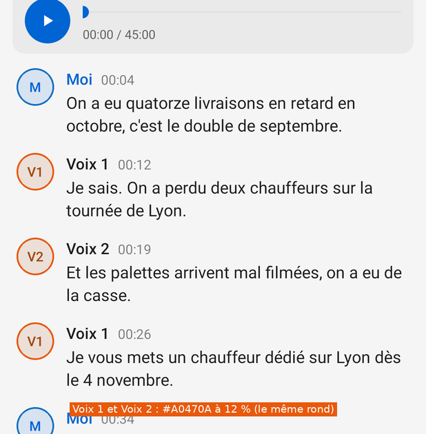
Banc, site-reunion, clair. Bleu : Moi. Orange : toutes les autres voix.Le Mac donne une teinte par voix de la pièce (
TranscriptReader.swift:1313: vert, violet, rose, sarcelle, indigo) et écrit son numéro seul (« 1 », « 2 ») dans le rond (:1324). Le fond du rond y est à 14 % en clair, 24 % en sombre ; Android met 12 % (0x1F) dans les deux modes.- Cause
- ConversationScreen.kt:347 :
if (l.me) Tone.INFO else Tone.WARNING; ConversationScreen.kt:355 fond0x1F; ConversationScreen.kt:314 initiales « V1 ». - Impact
- Chaque réunion en salle enregistrée par le téléphone (mode Tout le temps ou Événements du calendrier), sur toutes ses répliques. Les réunions du Mac reçues au téléphone ont souvent des noms : elles gardent l'orange, comme sur le Mac.
- Options
- A. Ne rien changerPour : Rien à coder ; l'orange dit « quelqu'un d'autre ».
Contre : Le téléphone montre moins que le Mac pour la même conversation ; les voix se confondent.B. Les teintes du Mac pour « Voix N », son numéro seul · choisiePour : Même lecture que sur le Mac ; aucune règle nouvelle ; chiffres plus lisibles que « V1 ».
Contre : Cinq couleurs de plus à tenir accessibles en clair et en sombre.C. Une teinte pour chaque autre personne, nommée ou nonPour : Distingue aussi Sophie et Karim.
Contre : Va plus loin que le Mac, qui garde l'orange pour les personnes nommées : les deux apps divergeraient. - Choix
- B. Le téléphone ressemble au Mac (DESIGN.md › Téléphone), et le Mac a déjà tranché ce cas. Les teintes du Mac (
.green,.purple…) sont des couleurs système trop claires pour du texte de 13 sp sur un fond de 12 % : elles sont foncées en clair et éclaircies en sombre jusqu'à 5:1 au moins (voir Système › Couleurs). - Référence
- WCAG 2.2 › 1.4.1 Use of Color (la couleur double le numéro, elle ne le remplace pas) et 1.4.3 (4,5:1 pour les initiales). Mac :
TranscriptReader.swift:1310-1342. - Spécification
Où Avant Après Look.kt (nouveau, après la ligne 25)—
val me = if (dark) 0xFF7AB8FF.toInt() else 0xFF0058C0.toInt() val them = if (dark) 0xFFFFC79A.toInt() else 0xFF8A3D06.toInt() val voices = if (dark) intArrayOf(0xFF4CD474.toInt(), 0xFFD0A8FF.toInt(), 0xFFFF9EC2.toInt(), 0xFF5CCFDC.toInt(), 0xFFB0B3FF.toInt()) else intArrayOf(0xFF16692E.toInt(), 0xFF7E35B0.toInt(), 0xFFA61F55.toInt(), 0xFF066570.toInt(), 0xFF4A4AC8.toInt()) /** Le fond d'un rond à initiales : 12 % en clair, 20 % en sombre. */ fun avatarFill(c: Int) = (c and 0x00FFFFFF) or ((if (dark) 0x33 else 0x1F) shl 24)ConversationScreen.kt:347val color = if (l.me) Look.Tone.INFO.color(look) else Look.Tone.WARNING.color(look)
val voice = l.who.removePrefix("Voix ").toIntOrNull()?.takeIf { l.who.startsWith("Voix ") } val color = when { l.me -> look.me; voice != null -> look.voices[(voice - 1) % look.voices.size]; else -> look.them }ConversationScreen.kt:353h.mark.text = initials(l.who)
h.mark.text = voice?.toString() ?: initials(l.who)
ConversationScreen.kt:355h.mark.background = look.mass(18, color = (color and 0x00FFFFFF) or 0x1F000000)
h.mark.background = look.mass(18, color = look.avatarFill(color))
- Acceptation
- Banc
site-reunion: les ronds de Voix 1 et Voix 2 ont deux teintes différentes ; le rond affiche « 1 » et « 2 ». - Relevé : chaque initiale à 4,5:1 au moins sur son rond, en clair et en sombre.
- Une conversation avec Sophie et Karim garde l'orange
thempour les deux, comme sur le Mac.
- Banc
- Prototype
- Prototypes
P02 · En sombre, le bleu de l'app reste celui du clair
gêne effort : 45 min lot L1- Symptôme
- En sombre, « ● Écoute depuis 08:12 », « Relier un calendrier », le chiffre d'aujourd'hui, les ronds des modes, le curseur et l'onde du Journal restent en
#0064D2, un bleu fait pour le fond clair. - Preuve
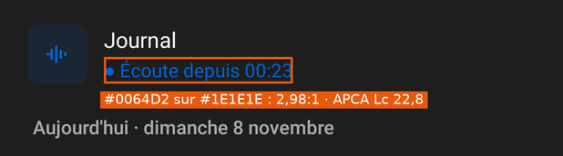
« ● Écoute depuis » : 2,98:1, APCA Lc 22,8. 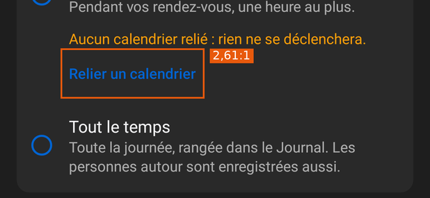
« Relier un calendrier » : 2,61:1 sur la carte. Mesures en sombre : aujourd'hui sur le jour choisi 2,08:1 ; ronds des modes et curseur 2,58:1 (non-texte, seuil 3:1) ; onde du Journal 2,72:1. La variante sombre existe déjà :
Tone.INFOvaut#409CFFen sombre (5,89:1 sur la page).- Cause
LinkService.ACCENTest une constante, utilisée 14 fois hors de sa définition : HomeScreen.kt:242, HomeScreen.kt:253, HomeScreen.kt:316, SettingsScreen.kt:38, SettingsScreen.kt:62, ConversationScreen.kt:87, ConversationScreen.kt:88.- Impact
- Toute personne en thème sombre : l'écoute, état le plus important de l'accueil en mode Tout le temps, s'y lit à 2,98:1.
- Options
- A. Remplacer chaque usage texte ou trait par Tone.INFOPour : Rien de nouveau ; 7 lignes.
Contre : INFO garde deux rôles (accent et information).B. Un jeton Look.accent, clair et sombre, pour tout ce qui est accent · choisiePour : Une valeur par rôle (DESIGN.md) ; prépare la couleur dynamique (P18).
Contre : Un jeton de plus. - Choix
- B :
Look.accent=#0064D2en clair,#409CFFen sombre.LinkService.ACCENTne sert plus qu'à la notification, qu'Android teinte lui-même, et aux fonds pleins sous du blanc (Lire, Scanner le code du Mac : blanc sur#0064D2= 5,59:1). - Référence
- WCAG 2.2 › 1.4.3 Contrast (Minimum) et 1.4.11 Non-text Contrast.
- Spécification
Où Avant Après Look.kt (après la ligne 25)—
val accent = if (dark) 0xFF409CFF.toInt() else LinkService.ACCENT
HomeScreen.kt:242tint = LinkService.ACCENT, plate = accentPlate(), metaColor = LinkService.ACCENT
tint = look.accent, plate = accentPlate(), metaColor = look.accent
HomeScreen.kt:253setColor((LinkService.ACCENT and 0x00FFFFFF) or 0x1F000000)
setColor((look.accent and 0x00FFFFFF) or (if (look.dark) 0x33000000 else 0x1F000000))
HomeScreen.kt:316if (today) LinkService.ACCENT else look.text
voir P12
SettingsScreen.kt:38buttonTintList = ColorStateList.valueOf(LinkService.ACCENT)
buttonTintList = ColorStateList.valueOf(look.accent)
SettingsScreen.kt:62setTextColor(LinkService.ACCENT)
setTextColor(look.accent)
ConversationScreen.kt:87-88ColorStateList.valueOf(LinkService.ACCENT)
ColorStateList.valueOf(look.accent)
- Acceptation
- Relevé sombre : aucun texte ni trait en
#0064D2; textes ≥ 4,5:1, traits ≥ 3:1. grep -n "LinkService.ACCENT" *.ktne renvoie plus que LinkService.kt (notifications), ConversationScreen.kt (fond de Lire) et SetupScreen.kt (fond du bouton).
- Relevé sombre : aucun texte ni trait en
- Prototype
- Prototypes
P03 · À 200 % de texte, la barre du bas, l'en-tête et les ronds se coupent
gêne effort : 3 h lot L2- Symptôme
- Avec la taille de police au maximum (200 % depuis Android 14), les quatre mots de la barre du bas se touchent et débordent de la capsule, la ligne de détail de l'en-tête est coupée par le bas, « SM » devient « S » dans son rond, l'indice « Rechercher dans la conversa » est tronqué sans « … ».
- Preuve

Texte 200 % : « RechercherCopierTéléchargerDétails ». 
Texte 200 % : détail coupé, initiales coupées. Relevé : 38 textes coupés par « … » à 200 %, contre 4 à 100 %.
- Cause
- Hauteurs fixes en dp autour de textes en sp : ConversationScreen.kt:145 (barre, 64 dp), SettingsScreen.kt:125, HomeScreen.kt:102 ; ConversationScreen.kt:331 (rond 36 × 36) ; outils de largeur libre mais mot sur une ligne, ConversationScreen.kt:178.
- Impact
- Les personnes qui grossissent le texte, nombreuses sur téléphone ; à 150 % déjà, la barre du bas touche les bords sur un écran de 360 dp.
- Options
- A. Laisser grandir : hauteurs minimales au lieu de fixes, rond qui suit son textePour : Rien ne se coupe ; les écrans restent les mêmes à 100 %.
Contre : La barre du bas ne tient toujours pas : quatre mots à 24 sp ne passent pas dans 360 dp.B. A, et la barre du bas en icônes seules au-delà de 130 % · choisiePour : Tout tient ; les noms restent dits par TalkBack et par un appui long (tooltipText) ; c'est la forme de la barre d'outils flottante de Material 3 (icônes seules).
Contre : Les mots disparaissent pour ceux qui en ont le plus besoin.C. A, et une barre du bas sur deux rangsPour : Garde les mots.
Contre : La barre couvre jusqu'à 140 dp de texte ; dessin nouveau. - Choix
- B. Les quatre icônes sont celles du Mac et d'Android (loupe, copier, télécharger, document) ; au-delà de 130 %, le mot est ce qui empêche la barre de tenir. Le Mac montre déjà ces outils en icônes seules (
captures-mac-0.24.0/lecture.webp). - Référence
- WCAG 2.2 › 1.4.4 Resize Text (200 % sans perte de contenu). Android 14 › Non-linear font scaling to 200%. Material Components › FloatingToolbar.md (« the recommendation exists for icon buttons »).
- Spécification
Où Avant Après ConversationScreen.kt:145LinearLayout.LayoutParams(-1, dp(64))
LinearLayout.LayoutParams(-1, -2) // bar() garde minimumHeight = dp(64)
SettingsScreen.kt:125, HomeScreen.kt:102LinearLayout.LayoutParams(-1, dp(64))
LinearLayout.LayoutParams(-1, -2).also { /* minimumHeight 64 dans bar() / topBar */ }ConversationScreen.kt:331addView(mark, LinearLayout.LayoutParams(dp(36), dp(36)))
addView(mark, LinearLayout.LayoutParams(-2, -2)) // mark : minWidth = minHeight = dp(36), padding dp(4), rond = capsule
ConversationScreen.kt:178addView(label(text, 12f), …)
if (a.resources.configuration.fontScale <= 1.3f) addView(label(text, 12f), …) tooltipText = text
ConversationScreen.kt:62-68 et HomeScreen.kt:69EditText(a).apply { … }ellipsize = TextUtils.TruncateAt.END ; minHeight = dp(48)
- Acceptation
- Relevé
texte200: aucun texte dont la hauteur de ses lignes dépasse celle de sa vue ; la barre du bas tient dans 360 dp. - Image
texte200/conversation-recherche: « SM » entier, détail de l'en-tête entier ou coupé par « … » seulement à droite.
- Relevé
- Prototype
- Prototypes
P04 · Le lecteur : curseur coupé, piste de 26 dp, bouton de 44 dp
gêne effort : 45 min lot L1- Symptôme
- Au début du son, le rond du curseur est coupé en deux contre le bord gauche de la piste. La piste fait 26 dp de haut pour le doigt ; le bouton Lire, 44 dp.
- Preuve
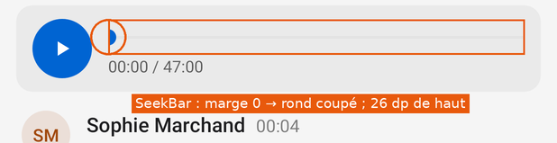
Banc conversation: demi-disque à 00:00. Relevé : SeekBar 308 × 26 dp, padding 0 à gauche et à droite ; Lire 44 × 44 dp.- Cause
- ConversationScreen.kt:90 :
setPadding(0, dp(4), 0, dp(4))retire la marge où la SeekBar dessine son rond ; ConversationScreen.kt:105 :LayoutParams(dp(44), dp(44)). - Impact
- Chaque conversation qui a encore son son léger (24 h et plus), à chaque ouverture : c'est le premier objet de l'écran.
- Options
- A. Rendre à la SeekBar ses marges, hauteur de 48 dp · choisiePour : 3 lignes ; le rond entier ; la cible conforme.
Contre : La piste se décale de 8 dp vers la droite (aligner le temps dessous).B. Slider de Material ComponentsPour : Le composant de référence.
Contre : L'app n'a pas androidx ni Material Components (MainActivity.kt:160) : une dépendance pour un curseur. - Choix
- A. Le bouton Lire passe à 48 dp (l'icône reste à 16 dp), la piste garde son dessin et prend 48 dp de haut au doigt.
- Référence
- Android › Make apps more accessible › Use large, simple controls (48 × 48 dp).
- Spécification
Où Avant Après ConversationScreen.kt:90setPadding(0, dp(4), 0, dp(4))
setPadding(dp(8), dp(11), dp(8), dp(11)) // 26 + 22 = 48 dp
ConversationScreen.kt:105addView(playButton, LinearLayout.LayoutParams(dp(44), dp(44)))
addView(playButton, LinearLayout.LayoutParams(dp(48), dp(48)))
ConversationScreen.kt:80-83 (playButton)background = pressable(look.mass(22, …)) ; setPadding(dp(14) …)
background = pressable(look.mass(24, …)) ; setPadding(dp(16) …)
ConversationScreen.kt:98private val time = label("", 12f, look.secondary)private val time = label("", 12f, look.secondary, digits = true).apply { setPadding(dp(8), 0, 0, 0) }- Acceptation
- Image
conversation: le rond du curseur entier à 00:00 et à la fin. - Relevé : SeekBar ≥ 48 dp de haut ; Lire 48 × 48 dp.
- Image
- Prototype
- Prototypes
P05 · « En cours » perd son rouge en ouvrant la conversation
gêne effort : 30 min lot L1- Symptôme
- Dans la liste, « 00:57 · ● En cours · 12 min » est rouge. En ouvrant la conversation, la même ligne passe en gris, point compris. La vignette en cours est une masse grise, quand le Journal a sa masse teintée.
- Preuve
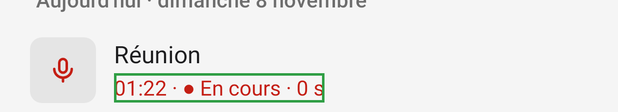
Liste : LIVE. 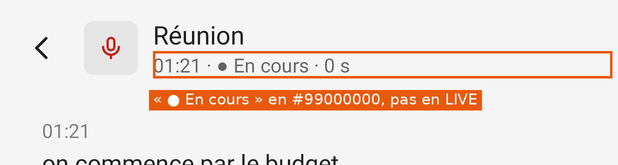
En-tête : #99000000.- Cause
- ConversationScreen.kt:204 : la ligne entière dans
detail, de couleur secondaire ; HomeScreen.kt:244 :plate = null. - Impact
- Chaque enregistrement ouvert pendant qu'il tourne. « Ça enregistre ou non » est la première chose que l'écran doit dire (principe tranché par Gildas).
- Options
- A. Toute la ligne de l'en-tête en LIVEPour : Simple.
Contre : L'heure et la durée en rouge : plus de rouge que dans la liste.B. Seulement « ● En cours » en LIVE, vignette teintée LIVE à 12 % · choisiePour : Exactement la forme de la liste et du Mac (encours.webp: le point et les mots en rouge).
Contre : Un Spannable. - Choix
- B.
- Référence
- DESIGN.md › Couleurs : « En cours, REC : Palette.live ». Cohérence d'un état d'un écran à l'autre.
- Spécification
Où Avant Après ConversationScreen.kt:204detail.text = listOfNotNull(Dates.hour(r.startedAt), "● En cours", …).joinToString(" · ")detail.text = SpannableStringBuilder(Dates.hour(r.startedAt) + " · ").append("● En cours", ForegroundColorSpan(Look.Tone.LIVE.color(look)), 0).append(" · " + …)ConversationScreen.kt:202paintPlate(kind, R.drawable.ic_micro, Look.Tone.LIVE.color(look))
paintPlate(…) ; kind.background = look.mass(8, color = look.avatarFill(Look.Tone.LIVE.color(look)))
HomeScreen.kt:244plate = null
plate = livePlate() // comme accentPlate(), en LIVE
- Acceptation
- Images
conversation-en-directetaccueil-enregistre: « ● En cours » de la même couleur ; vignettes teintées.
- Images
- Prototype
- Prototypes
P06 · La notification d'enregistrement montre une barre de chargement
gêne effort : 30 min lot L1- Symptôme
- Pendant un enregistrement, la notification dit « Enregistre », « Depuis 14:02 », répète l'heure dans son en-tête, et fait filer une barre indéterminée. L'action « Arrêter » porte l'icône de pause d'Android.
- Preuve
Code (le banc ne dessine pas les notifications) : LinkService.kt:982 « Depuis … » ; LinkService.kt:1039
setWhen(cur.startedAt); LinkService.kt:1042setProgress(0, 0, true); LinkService.kt:1045android.R.drawable.ic_media_pause.- Cause
- Choix du commit
9dea502(6 novembre) : « Pas de rouge : un enregistrement en cours se voit à une barre qui file sous le texte, comme un travail en tâche de fond. » - Impact
- Chaque enregistrement, dans le volet des notifications et sur l'écran verrouillé.
- Options
- A. Garder la barrePour : Le mouvement dit que quelque chose tourne.
Contre : Material : « Progress indicators express an unspecified wait time » (une attente) ; ici, rien n'est attendu. L'heure est dite deux fois.B. Le chronomètre d'Android à la place de la barre et de « Depuis » · choisiePour : Dit la durée qui avance, sans rouge, sans texte ; le texte de la notification disparaît.
Contre : Le mouvement devient un chiffre qui change chaque seconde.C. Barre et chronomètrePour : Rien ne se perd.
Contre : Deux signaux pour un même fait. - Choix
- B.
setUsesChronometer(true)montre le champwhen« as a stopwatch » (référence Android) : le temps écoulé, comme une durée d'appel. On garde « jamais de rouge ». L'icône d'action devientic_arreter: Android ne l'affiche plus sur le téléphone depuis 7.0 (« action button icons will not be displayed »), mais la montre et la voiture, si. - Référence
- Android › Notification.Builder#setUsesChronometer ; Notification.Action.Builder. Material Components › ProgressIndicator.md (« express an unspecified wait time »).
- Choix déjà tranché
- Revient sur
9dea502(barre qui file). À trancher par Gildas ; le « jamais de rouge » est gardé. - Spécification
Où Avant Après LinkService.kt:982"Enregistre" to listOfNotNull("Depuis …", test).joinToString(". ")"Enregistre" to (test ?: "")
LinkService.kt:1042if (busy) builder.setProgress(0, 0, true)
if (busy) builder.setUsesChronometer(true)
LinkService.kt:1045if (busy) android.R.drawable.ic_media_pause else R.drawable.micro_notif
if (busy) R.drawable.ic_arreter else R.drawable.micro_notif
- Acceptation
- Sur un téléphone : l'en-tête de la notification compte 00:01, 00:02… ; pas de barre ; un seul rappel de l'heure.
- DESIGN.md › Notifications mis à jour dans le même commit.
- Prototype
- Prototypes
P07 · Trois petits textes sous 4,5:1 en clair, le secondaire faible en sombre
gêne effort : 20 min lot L1- Symptôme
- En clair : l'heure de chaque réplique (noir à 50 %, 13 sp) est à 3,88:1 ; l'initiale « M » de Moi à 4,31:1 sur son rond ; le chiffre d'aujourd'hui à 3,93:1 sur le jour choisi. En sombre, WCAG passe mais APCA met le texte secondaire (blanc à 62 %) à Lc 54, sous Lc 60.
- Preuve
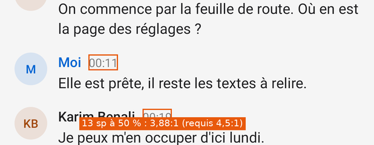
Heures des répliques : #7F000000, 3,88:1.Mesures complètes : Mesures › Contrastes des textes.
- Cause
- ConversationScreen.kt:325
look.ink(0.5); Look.kt:22 et Look.kt:230.62en sombre. - Impact
- Chaque réplique de chaque conversation ; en sombre, toute méta (heure, durée, personnes), tout libellé de pied et toute valeur des Réglages.
- Options
- A. Heures en secondaire (60 %), secondaire sombre à 70 % · choisiePour : Une nuance de gris de moins ; 5,59:1 en clair ; Lc 64 en sombre.
Contre : Les heures pèsent un peu plus.B. Heures à 55 %Pour : Plus discrètes.
Contre : 4,5:1 tout juste ; une valeur de plus. - Choix
- A. Le secondaire devient la seule nuance de texte discret ; « M » et aujourd'hui sont réglés par P01 et P12.
- Référence
- WCAG 2.2 › 1.4.3. APCA in a Nutshell › Use-Case & Size Ranges (Lc 60 pour le texte qui se lit).
- Spécification
Où Avant Après ConversationScreen.kt:325val at = label("", 13f, look.ink(0.5))val at = label("", 14f, look.secondary, digits = true)Look.kt:22val secondary = ink(if (dark) 0.62 else 0.6)
val secondary = ink(if (dark) 0.70 else 0.6)
Look.kt:23val title = ink(if (dark) 0.62 else 0.56)
val title = secondary
- Acceptation
- Relevé clair : aucun texte sous 4,5:1.
- Relevé sombre : texte secondaire à Lc 60 au moins.
- Prototype
- Prototypes
P08 · Aucun titre pour TalkBack
gêne effort : 20 min lot L1- Symptôme
- Les jours de la liste (« Samedi 7 novembre »), les groupes des Réglages (« Enregistrement », « Intégrations ») et le titre d'un écran se voient comme des titres mais n'en sont pas pour l'accessibilité.
- Preuve
Relevé : 0 vue marquée titre sur 1 084 vues des 24 états en clair.
- Cause
- HomeScreen.kt:240, SettingsScreen.kt:121, Screen.kt:107 : aucun
isAccessibilityHeading. - Impact
- Les personnes aveugles ou malvoyantes, à chaque passage dans une liste longue : sans titres, TalkBack lit chaque conversation une à une pour atteindre un jour.
- Options
- A. Marquer les titres · choisiePour : 3 lignes ; la navigation « par titres » de TalkBack fonctionne.
Contre : Aucun. - Choix
- A.
- Référence
- WCAG 2.2 › 1.3.1 Info and Relationships. Android ›
View#setAccessibilityHeading(API 28 ; minSdk de l'app : 29). - Spécification
Où Avant Après HomeScreen.kt:240label(r.text, 14f, look.title, bold = true).apply { setPadding(…) }label(…).apply { setPadding(…); isAccessibilityHeading = true }SettingsScreen.kt:121label(text, 14f, look.title, bold = true).apply { setPadding(…) }label(…).apply { setPadding(…); isAccessibilityHeading = true }Screen.kt:115 (bar, titre)addView(title)
addView(title.apply { isAccessibilityHeading = true })- Acceptation
- Relevé : chaque titre de jour et de groupe a
heading = true. - TalkBack, navigation par titres : passe de jour en jour.
- Relevé : chaque titre de jour et de groupe a
- Prototype
- Prototypes
P09 · Cinq cibles sous 48 dp
détail effort : 45 min lot L1- Symptôme
- Le bouton Lire (44 × 44), le champ de recherche de l'accueil (42,7 dp de haut), celui de la conversation (41,7), la piste du lecteur (26), et à 360 dp de large, les jours du calendrier (45,7 dp de large).
- Preuve
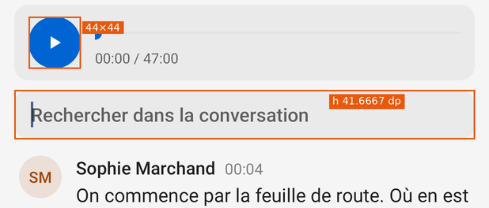
Lire 44 × 44, champ 41,7 dp. 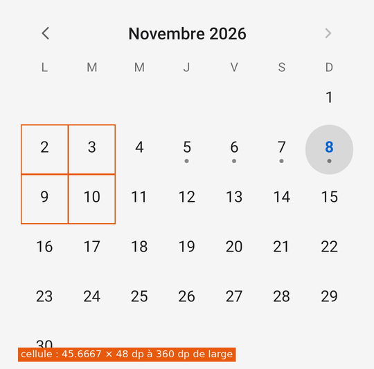
360 dp : cellule de 45,7 × 48 dp. - Cause
- ConversationScreen.kt:105 ; HomeScreen.kt:69 et ConversationScreen.kt:62 (hauteur du texte + padding) ; HomeScreen.kt:88 : le calendrier a 8 dp de marge en plus des 12 de la liste.
- Impact
- Chaque recherche, chaque lecture ; le calendrier sur les petits téléphones (360 dp : Pixel 4a, nombreux Android d'entrée de gamme).
- Options
- A. 48 dp partout · choisiePour : La règle d'Android, tenue par toutes les autres cibles de l'app.
Contre : Le calendrier perd 16 dp de marge. - Choix
- A. Pour le calendrier, la grille prend toute la largeur de la liste : (360 − 24) / 7 = 48 dp.
- Référence
- Android › Use large, simple controls (48 × 48 dp). WCAG 2.2 › 2.5.8 (24 px) est tenu partout.
- Spécification
Où Avant Après ConversationScreen.kt:105dp(44), dp(44)
dp(48), dp(48) (voir P04)
HomeScreen.kt:69 et ConversationScreen.kt:62—
minHeight = dp(48)
HomeScreen.kt:88setPadding(dp(8), dp(4), dp(8), dp(4))
setPadding(0, dp(4), 0, dp(4))
- Acceptation
- Relevés clair, 360 dp et 200 % : aucune cible sous 48 dp.
- Prototype
- Prototypes
P10 · Les chiffres bougent : pas de chiffres tabulaires
détail effort : 30 min lot L1- Symptôme
- La durée d'un enregistrement (« 9 s », « 11 s »), le temps du lecteur et les heures n'ont pas de chiffres à chasse fixe : la ligne change de largeur chaque seconde.
- Preuve
Relevé :
fontFeatureSettingsvide sur les 2 101 textes mesurés. Le Mac le fait (.monospacedDigit(), DESIGN.md › Texte).- Cause
- Screen.kt:37 :
label()n'a pas d'option pour les chiffres. - Impact
- Chaque seconde d'un enregistrement à l'écran ; à la lecture d'un son.
- Options
- A.
fontFeatureSettings = "tnum"sur les heures, durées et nombres · choisiePour : Roboto les a ; comme le Mac.
Contre : Aucun. - Choix
- A.
- Référence
- DESIGN.md › Texte (« Heures, durées, nombres : .monospacedDigit() »).
- Spécification
Où Avant Après Screen.kt:37fun label(…, oneLine: Boolean = false)
fun label(…, oneLine: Boolean = false, digits: Boolean = false) … if (digits) fontFeatureSettings = "tnum"
HomeScreen.kt:273, ConversationScreen.kt:57, 98, 325, HomeScreen.kt:316label(…)
label(…, digits = true)
- Acceptation
- Relevé :
features = "tnum"sur chaque texte d'heure ou de durée.
- Relevé :
- Prototype
- Prototypes
P11 · Quatre bords gauches dans les Réglages
détail effort : 30 min lot L3- Symptôme
- Dans un écran de trois blocs : titres de groupe à 20 dp, « Enregistrer les appels » à 28, « Calendrier » et « Mac » à 32, ronds des modes à 34.
- Preuve
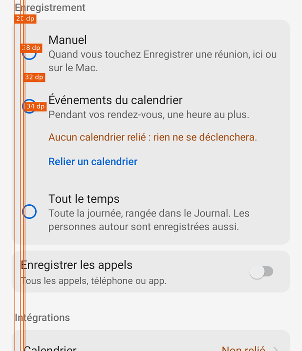
Bords mesurés dans le relevé (x + padding) : 20, 28, 32, 34 dp. - Cause
- SettingsScreen.kt:121 (padding 4) ; SettingsScreen.kt:76 (8) + SettingsScreen.kt:43 (10) ; SettingsScreen.kt:92 (12) ; SettingsScreen.kt:118 (4) + Screen.kt:141 (12).
- Impact
- Chaque visite des Réglages.
- Options
- A. Contenu des cartes à 16 dp du bord de la carte, titres alignés dessus · choisiePour : Un seul bord (32 dp de l'écran) ; la marge de liste de Material (16 dp).
Contre : Les ronds se décalent de 2 dp.B. Titres à 16 dp de l'écran, contenu à 32Pour : Titres en retrait inverse.
Contre : Deux bords. - Choix
- A.
- Référence
- Material Components › List.md :
paddingStart="16dp",paddingEnd="16dp". - Spécification
Où Avant Après SettingsScreen.kt:121setPadding(dp(4), dp(top), dp(4), dp(8))
setPadding(dp(16), dp(top), dp(16), dp(8))
SettingsScreen.kt:76setPadding(dp(8), dp(4), dp(4), dp(4))
setPadding(0, dp(4), 0, dp(4))
SettingsScreen.kt:43setPadding(dp(10), dp(12), dp(12), dp(12))
setPadding(dp(16), dp(12), dp(16), dp(12)) // le rond à 16 dp
SettingsScreen.kt:92setPadding(dp(12), dp(8), dp(12), dp(8))
setPadding(dp(16), dp(8), dp(16), dp(8))
SettingsScreen.kt:118 et Screen.kt:141setPadding(dp(4), …) ; setPadding(dp(12), 0, dp(8), 0)
setPadding(0, …) ; setPadding(dp(16), 0, dp(12), 0)
- Acceptation
- Relevé
reglages: titres, noms et ronds partent tous de x = 32 dp.
- Relevé
- Prototype
- Prototypes
P12 · Calendrier : deux flèches différentes, aujourd'hui et le jour choisi mal distingués
détail effort : 30 min lot L3- Symptôme
- « Mois précédent » et « Mois suivant » n'ont ni le même dessin ni le même gris. Aujourd'hui est un chiffre bleu gras ; le jour choisi, un disque gris à 12 % ; les deux à la fois donnent du bleu sur gris à 3,93:1 (2,08:1 en sombre).
- Preuve
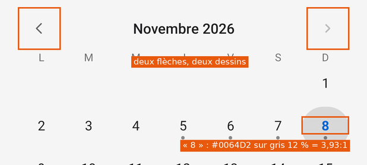
Banc calendrier. Flèche suivante : 1,77:1 (40 % gravé danschevron.xml× teinte secondaire).- Cause
- HomeScreen.kt:283 (
ic_retour) et HomeScreen.kt:285 (chevron, trait 2,4,#66000000) ; HomeScreen.kt:312 ; HomeScreen.kt:316 (le seul gras 700 de l'app). - Impact
- Chaque passage au calendrier.
- Options
- A. La forme de Material : aujourd'hui en anneau, choisi en disque plein · choisiePour : Ce que montre le sélecteur de date d'Android ; aujourd'hui et choisi se lisent ensemble.
Contre : Le disque choisi devient bleu.B. Garder le disque gris, aujourd'hui en anneauPour : Moins de bleu.
Contre : Le choisi reste à 1,32:1 contre la page. - Choix
- A. Une seule flèche, retournée pour le mois précédent.
- Référence
- Material Components › datepicker/styles.xml :
Day.Selected→itemFillColor ?attr/colorPrimary,itemTextColor ?attr/colorOnPrimary;Day.Today→itemStrokeColor,itemStrokeWidth. - Spécification
Où Avant Après HomeScreen.kt:283iconButton(R.drawable.ic_retour, look.secondary, "Mois précédent", 18)
iconButton(R.drawable.chevron, look.secondary, "Mois précédent", 18).apply { scaleX = -1f }HomeScreen.kt:312background = if (selected) pressable(look.mass(24, 0.12)) else flat(24)
background = when { selected -> pressable(look.mass(24, color = look.accent)); today -> ring(look.accent, 1); else -> flat(24) }HomeScreen.kt:316label(n.toString(), 15f, if (today) LinkService.ACCENT else look.text) … Typeface.BOLD
label(n.toString(), 16f, when { selected -> look.onAccent; today -> look.accent; else -> look.text }, digits = true) // sans graschevron.xml:10android:strokeColor="#66000000"
android:strokeColor="#FF000000"
- Acceptation
- Image
calendrier: flèches symétriques, même gris ; aujourd'hui en anneau ; jour choisi en disque plein, chiffre à 4,5:1.
- Image
- Prototype
- Prototypes
P13 · Icônes : quatre épaisseurs de trait, un chevron presque invisible
détail effort : 1 h lot L3- Symptôme
- Les icônes au trait mélangent 1,8, 1,9, 2 et 2,4 dp sur 24. Dans le pied, le rond d'Enregistrer et la roue des Réglages (1,8) sont plus maigres que la loupe (2). Le chevron des Réglages sort à 16 % (opacité gravée × teinte).
- Preuve
Relevé des
res/drawable: Inventaire › Dessin des icônes. Chevron des Réglages : 1,44:1 en clair, 1,68:1 en sombre.- Cause
- Dessins faits un par un ; res/drawable/chevron.xml:10 grave
#66000000, quesetTintmultiplie ; Screen.kt:148 teinte à 0,4. - Impact
- Chaque écran ; le chevron, sur chaque ligne des Réglages.
- Options
- A. Trait de 2 partout, chevron sans opacité gravée et teinté secondaire · choisiePour : Un seul trait, comme Material Symbols (poids 400) ; chevron à 5,4:1.
Contre : Revoir 9 fichiers.B. Passer à Material SymbolsPour : Le jeu de référence.
Contre : Change le dessin de toutes les icônes, faites pour ressembler au Mac. - Choix
- A.
- Référence
- WCAG 2.2 › 1.4.11 (3:1 pour un objet qui dit qu'on peut toucher).
- Spécification
Où Avant Après ic_arreter, ic_copier, ic_details, ic_enregistrer, ic_photo, ic_reglages, ic_telecharger (.xml)android:strokeWidth="1.8"
android:strokeWidth="2"
ic_calendrier, ic_liste (.xml)android:strokeWidth="1.9"
android:strokeWidth="2"
chevron.xml:10-11strokeColor="#66000000" strokeWidth="2.4"
strokeColor="#FF000000" strokeWidth="2"
Screen.kt:148icon(R.drawable.chevron, look.ink(0.4), 16)
icon(R.drawable.chevron, look.secondary, 16)
- Acceptation
- Tous les
strokeWidthderes/drawablevalent 2 ; chevron ≥ 3:1 dans les deux modes.
- Tous les
- Prototype
- Prototypes
P14 · Les logos WhatsApp et Telegram disparaissent en clair, Signal en sombre
gêne effort : 30 min lot L1- Symptôme
- Sur la vignette grise (masse 0,07), le vert de WhatsApp est à 1,56:1 et le bleu de Telegram à 2,17:1 en clair ; le bleu de Signal à 2,24:1 en sombre.
- Preuve
Mesures › Contrastes des icônes. Images : clair, sombre.
- Cause
- Screen.kt:87 à Screen.kt:90 : une seule couleur de marque pour les deux modes.
- Impact
- Chaque appel WhatsApp, Telegram ou Signal dans la liste, la recherche et l'en-tête ; c'est le seul repère de la sorte d'appel.
- Options
- A. Une variante par mode, dans la famille de la marque · choisiePour : WhatsApp
#0F8A4B(3,46:1), Telegram#1C7FB8(3,45:1) en clair ; Signal#8E95FF(5,11:1), Meet#2BB3A6en sombre.
Contre : Les couleurs s'écartent un peu des logos.B. Le logo blanc sur un fond de la marquePour : Le logo exact.
Contre : Blanc sur#25D366: 1,98:1 ; une masse colorée dans une liste grise.C. Garder les couleurs de marquePour : Fidèle.
Contre : Sous 3:1 pour l'objet qui dit la sorte d'appel. - Choix
- A.
- Référence
- WCAG 2.2 › 1.4.11 Non-text Contrast.
- Spécification
Où Avant Après Screen.kt:87-90"whatsapp" -> 0xFF25D366 … "meet" -> 0xFF00897B
"whatsapp" -> if (look.dark) 0xFF25D366 else 0xFF0F8A4B "signal" -> if (look.dark) 0xFF8E95FF else 0xFF3B45FD "telegram" -> if (look.dark) 0xFF26A5E4 else 0xFF1C7FB8 "meet" -> if (look.dark) 0xFF2BB3A6 else 0xFF00897B
- Acceptation
- Les quatre logos à 3:1 au moins sur leur vignette, en clair et en sombre.
- Prototype
- Prototypes


P15 · Le texte en direct saute de 48 dp quand le texte du Mac arrive
détail effort : 10 min lot L3- Symptôme
- Pendant l'enregistrement, le texte du téléphone part à 16 dp du bord ; les répliques finies partent à 64 dp, derrière leur rond. Quand le texte du Mac remplace celui du téléphone, tout le bloc se décale.
- Preuve
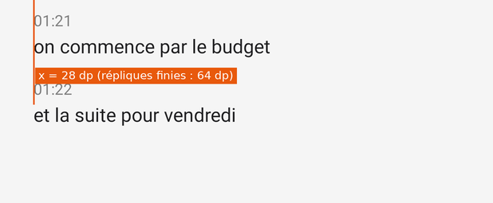
Relevé : x = 16 dp en direct, 64 dp une fois transcrit. - Cause
- ConversationScreen.kt:349 : sans nom, le rond passe en
GONE. - Impact
- Chaque enregistrement suivi à l'écran, au moment où il se termine.
- Options
- A. Rond
INVISIBLEau lieu deGONE· choisiePour : Le texte reste à sa place ; le téléphone ne prétend toujours pas savoir qui parle.
Contre : 48 dp de largeur en moins pour le texte en direct. - Choix
- A.
- Référence
- Cohérence de position d'un même contenu.
- Spécification
Où Avant Après ConversationScreen.kt:349h.mark.visibility = if (l.who.isEmpty()) View.GONE else View.VISIBLE
h.mark.visibility = if (l.who.isEmpty()) View.INVISIBLE else View.VISIBLE h.who.visibility = if (l.who.isEmpty()) View.GONE else View.VISIBLE
- Acceptation
- Relevé
conversation-en-direct: texte à x = 64 dp.
- Relevé
- Prototype
- Prototypes
P16 · Espaces insécables et petites incohérences de textes
détail effort : 45 min lot L3- Symptôme
- La mise en route coupe « Téléphones › » en fin de ligne. 12 chaînes ont une espace ordinaire avant « : », 2 avant « ? », 4 dans des guillemets « », 2 entre un nombre et son unité. « Pas encore transcrit. » (Journal) et « Pas encore transcrite. » (conversation) ; « Aucune parole reconnue » sans point quand ses voisines en ont un.
- Preuve
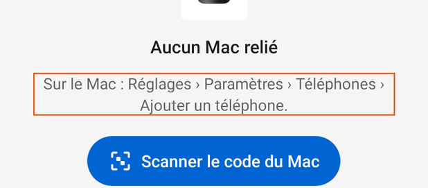
Mise en route : « › » seul en fin de ligne. Liste complète :
donnees/mesures-typographie.csv.- Cause
- SetupScreen.kt:64 ; Screen.kt:160 à 162 ; ConversationScreen.kt:195, ConversationScreen.kt:242.
- Impact
- La mise en route (premier écran vu) ; chaque durée longue (« 2 h 41 » peut se couper) ; les états vides.
- Options
- A. Insécables dans les chaînes et dans Dates · choisiePour : Rien ne se coupe mal ; règle typographique française.
Contre : Caractères invisibles dans le code : les écrire\u00A0et\u202F. - Choix
- A. Les apostrophes droites restent : ce sont celles du Mac et du site.
- Référence
- Wikipédia › Espace insécable › Usage › En France (espace fine insécable devant « ; ? ! », espace insécable devant « : »). TEXTES.md › Ponctuation.
- Spécification
Où Avant Après SetupScreen.kt:64"Sur le Mac : Réglages › Paramètres › Téléphones › Ajouter un téléphone."
"Sur le Mac\u00A0: Réglages\u00A0› Paramètres\u00A0› Téléphones\u00A0› Ajouter un téléphone."
Screen.kt:160-162"$seconds s" ; "${…} min" ; "${…} h ${…}""$seconds\u00A0s" ; "${…}\u00A0min" ; "${…}\u00A0h\u00A0${…}"ConversationScreen.kt:195"Pas encore transcrit."
"Pas encore transcrit." (le Journal : masculin, correct ; garder)
ConversationScreen.kt:242"Aucune parole reconnue"
"Aucune parole reconnue."
12 chaînes avec « : »" : "
"\u00A0: " (liste : mesures-typographie.csv)
- Acceptation
mesures-typographie.csvrefait : 0 ligne pour « : », « ? », « › » et les unités.
- Prototype
- Prototypes
P17 · L'icône de l'app : le mot de la plaque sur les téléphones les plus denses
détail effort : 1 h lot L4- Symptôme
- Le micro occupe 37,3 dp sur 108 (57 % de la zone sûre de 66 dp). En xxxhdpi, il fait 150 px, au-dessus du seuil de 128 px : la plaque garde le mot « callrecorder », qui s'affiche à environ 1,7 dp de haut sur l'écran d'accueil. Les autres densités ont déjà la bande.
- Preuve
Mesures › Poids des images : micro de 38, 56, 74, 112 et 150 px selon la densité.
- Cause
scripts/icone.swiftchoisit la bande d'après la taille du fichier, pas d'après la taille affichée.- Impact
- Les téléphones au-dessus de 480 dpi (xxxhdpi), sur l'écran d'accueil et dans le tiroir.
- Options
- A. La bande à toutes les densités d'Android · choisiePour : Applique la règle écrite (
b94d18c: « Sous 128 px et sur Android, … le mot devient une bande »).
Contre : Aucun.B. A, et le micro agrandi à 48 % du calquePour : Plus présent à côté des autres icônes.
Contre : Revient sur « le micro, petit » (12fdcff). - Choix
- A, retenue. B est laissée à Gildas.
- Référence
- Android › Adaptive icons (calques de 108 dp, zone sûre de 66 dp). marque/README.md.
- Choix déjà tranché
- B irait contre
12fdcff(« Android : le micro, petit, sur un fond blanc »). - Spécification
Où Avant Après scripts/icone.swift (sortie Android)plaque avec le mot si le micro dépasse 128 px
toujours la bande pour mipmap-*/ic_launcher_devant.png
- Acceptation
mipmap-xxxhdpi/ic_launcher_devant.png: plaque en bande, sans lettres.
- Prototype
- Prototypes
P18 · L'accent ne suit pas le téléphone
détail effort : 1 h lot L4- Symptôme
- L'accent est fixé à
#0064D2. Sur le Mac, il suit le système (Color.accentColor) et seul « Moi » garde un bleu fixe. - Preuve
DESIGN.md › Couleurs : « Accent …
Color.accentColor, celui du système » ; « Moi » :TranscriptReaderView.me.- Cause
- LinkService.kt:40 ; Look.kt:50.
- Impact
- Sur un Pixel, les apps du système prennent les couleurs du fond d'écran (couleur dynamique, Android 12).
- Options
- A. Garder le bleu fixePour : La marque est stable.
Contre : S'écarte du principe du Mac (« une app du système »).B. Accent dynamique (API 31+), « Moi » fixe · choisiePour : Traduit le principe du Mac sur Android ; repli#0064D2/#409CFF.
Contre : L'accent peut devenir proche de LIVE ou de l'orange : à vérifier sur 3 fonds d'écran.C. Tout Material You (fonds, cartes)Pour : Le plus Pixel.
Contre : Les masses grises en opacités du Mac disparaissent. - Choix
- B, après P02 (qui crée
Look.accent). - Référence
- Android › Dynamic color (« added in Android 12 »).
- Spécification
Où Avant Après Look.kt (P02)val accent = if (dark) 0xFF409CFF.toInt() else LinkService.ACCENT
val accent = if (Build.VERSION.SDK_INT >= 31) c.getColor(if (dark) android.R.color.system_accent1_200 else android.R.color.system_accent1_600) else if (dark) 0xFF409CFF.toInt() else LinkService.ACCENT- Acceptation
- Sur trois fonds d'écran (bleu, vert, rouge) : boutons pleins, ronds et curseur prennent l'accent ; « Moi » reste bleu ; textes en accent à 4,5:1.
- Prototype
- Prototypes
P19 · Le point rouge des appels : un autre rouge, dans la barre d'état
détail effort : 20 min lot L3- Symptôme
- Le point qui garde le micro pendant un appel est
#D32F2F, le seul rouge hors palette (LIVE :#C41E14/#FF453A). Il est posé à 36 dp du haut et 12 dp du bord droit, là où la barre d'état montre déjà l'indicateur du micro d'Android. - Preuve
CallService.kt:129, CallService.kt:136-137. ΔE76 entre
#C41E14et#D32F2F: voir Inventaire › Couleurs proches.- Cause
- Écrit avant
Look(e20c252, 4 novembre). - Impact
- Chaque appel enregistré quand la pastille ne peut pas se montrer (écran verrouillé, app ouverte).
- Options
- A. LIVE, et sous la barre d'état · choisiePour : Un seul rouge ; ne se mêle pas aux icônes du système.
Contre : Lire la hauteur de la barre d'état. - Choix
- A.
- Référence
- Android 12 › Microphone and camera indicators (« an icon appears in the status bar »).
- Spécification
Où Avant Après CallService.kt:129setColor(0xFFD32F2F.toInt())
setColor(Look.Tone.LIVE.color(Look(this)))
CallService.kt:137y = size * 3
y = statusBarHeight() + size / 2
- Acceptation
- Sur un téléphone en appel : le point sous la barre d'état, au rouge de l'app.
- Prototype
- Prototypes
P20 · « CallRecorder » sous l'icône et dans les Paramètres
détail effort : 10 min lot L3- Symptôme
- Le nom affiché sous l'icône, dans l'en-tête de chaque notification et dans la liste Accessibilité est « CallRecorder ».
- Preuve
AndroidManifest.xml:28, AndroidManifest.xml:60, SettingsScreen.kt:101.
- Cause
- Étiquette posée au premier commit Android (
ef64907, 1er novembre), avant la règle du nom. - Impact
- Le texte de la marque le plus vu sur le téléphone.
- Options
- A. « Callrecorder » · choisiePour : La règle de la marque (marque/README.md › Le nom dans le texte).
Contre : Aucun. - Choix
- A. Le dossier « Téléchargements › CallRecorder » est un nom de fichier : il reste.
- Référence
- marque/README.md.
- Spécification
Où Avant Après AndroidManifest.xml:28android:label="CallRecorder"
android:label="Callrecorder"
AndroidManifest.xml:60"CallRecorder : enregistrer les appels"
"Callrecorder\u00A0: enregistrer les appels"
SettingsScreen.kt:101"1. Touchez CallRecorder dans la liste…"
"1. Touchez Callrecorder dans la liste…"
- Acceptation
grep -rn "CallRecorder" res AndroidManifest.xml *.kt: seulement les chemins de fichiers.
- Prototype
- Prototypes
P21 · Des noms coupés à la lettre
détail effort : 1 h lot L3- Symptôme
- « 23:57 · 47 min · Sophie Marchand, Karim B… » : le second nom est coupé au milieu. 4 textes coupés à 100 %, 10 à 360 dp, 38 à 200 %.
- Preuve
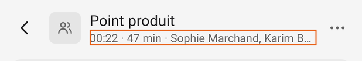
En-tête d'une conversation, 412 dp. - Cause
- ConversationScreen.kt:57 et HomeScreen.kt:273 : une ligne, « … » en fin.
- Impact
- Chaque conversation à deux personnes ou plus.
- Options
- A. Couper au nom : « Sophie Marchand +1 » · choisiePour : Le nombre de personnes reste ; aucun nom tronqué.
Contre : Mesurer le texte au rendu.B. Deux lignesPour : Tout se lit.
Contre : La barre et la ligne grandissent. - Choix
- A. Les noms complets restent dans Détails.
- Référence
- Lisibilité ; même règle que la colonne de liste du Mac, qui a la place de tout montrer.
- Spécification
Où Avant Après Screen.kt (nouveau)—
fun people(names: List<String>, paint: TextPaint, room: Float): String // retire les noms de la fin et ajoute « +n » tant que ça dépasse
ConversationScreen.kt:231 et HomeScreen.kt:258i.people.joinToString(", ")people(i.people, label.paint, largeur disponible)
- Acceptation
- Relevé : aucun nom coupé par « … » à 412 dp.
- Prototype
- Prototypes
P22 · Des outils qui ne font rien, et des états vides sans forme commune
détail effort : 45 min lot L3- Symptôme
- Sans texte, Copier et Télécharger restent dans la barre, à 40 % d'opacité, et toujours actifs pour TalkBack. Les états vides sont une phrase grise de 15 sp au milieu, avec ou sans point.
- Preuve
Images : Journal vide, pas encore arrivée, aucune parole.
- Cause
- ConversationScreen.kt:183-184 (
alphaseul) ; ConversationScreen.kt:61 (15 sp). - Impact
- Chaque conversation sans texte : en attente du Mac, en écoute, ou vide.
- Options
- A. Masquer Copier et Télécharger quand il n'y a rien · choisiePour : « Zéro bouton inutile » (principe tranché) ; TalkBack n'annonce plus de bouton mort.
Contre : La barre change de largeur.B. Les désactiver (isEnabled = false)Pour : La barre ne bouge pas ; l'état est dit.
Contre : Des boutons inutiles restent. - Choix
- A, et l'état vide en 16 sp secondaire, toujours avec son point.
- Référence
- WCAG 2.2 › 4.1.2 Name, Role, Value (un bouton à 40 % qui reste actif). DESIGN.md › Principes (« Zéro bouton inutile »).
- Spécification
Où Avant Après ConversationScreen.kt:183-184copyButton.alpha = if (all.isEmpty()) 0.4f else 1f
copyButton.visibility = if (all.isEmpty()) View.GONE else View.VISIBLE ; downloadButton.visibility = copyButton.visibility
ConversationScreen.kt:61label("", 15f, look.secondary)label("", 16f, look.secondary)- Acceptation
- Images
journal-vide,avant-transcription: barre réduite à Rechercher (et Détails).
- Images
- Prototype
- Prototypes


P23 · Six tailles de texte pour quatre rôles
détail effort : 3 h lot L4- Symptôme
- 12, 13, 14, 15, 16 et 17 sp, plus un × 0,875. Le nom d'une réplique (15), la valeur d'un réglage (15) et un état vide (15) ont une taille que rien d'autre n'a ; le titre de barre (17) est hors de l'échelle de Material.
- Preuve
Inventaire › Tailles de texte : 31 réglages, avec leurs lignes.
- Cause
- Chaque écran fixe ses tailles (DESIGN.md : « chaque écran … n'y fixe que ses tailles de texte »).
- Impact
- Toute l'app : des écarts d'un sp se voient comme des hésitations.
- Options
- A. Une échelle de quatre tailles : 12, 14, 16, 24, avec les rôles de Material 3 · choisiePour : Une valeur par rôle (DESIGN.md) ; Material 3 donne les rôles.
Contre : Le nom des répliques passe de 15 à 14 medium ; le titre de barre de 17 à 16 medium.B. Garder les tailles, les nommerPour : Rien ne change à l'écran.
Contre : Les quasi-doublons restent. - Choix
- A, détaillé dans Système › Texte avec la table de migration.
- Référence
- Material Components › Typography.md (Title Medium : Medium 16 sp ; Body Large : Regular 16 sp ; Body Medium : Regular 14 sp ; Label Medium : Medium 12 sp ; Headline Small : Regular 24 sp).
- Spécification
Où Avant Après Look.kt (nouveau)—
object Type { const val label = 12f; const val body = 14f; const val bodyLarge = 16f; const val headline = 24f }31 ligneslabel(…, 13f) / 15f / 17f
voir la table de migration
- Acceptation
grep -n "f, " *.ktne trouve plus de taille hors deLook.Type.
- Prototype
- Prototypes
P24 · Le choix Liste / Calendrier ne tient qu'à un gris de 12 %
détail effort : 15 min lot L3- Symptôme
- Le bouton choisi a une masse à 12 % sur une capsule à 5 % : 1,18:1 en clair, 1,26:1 en sombre. L'icône choisie passe du gris secondaire au noir.
- Preuve
- Cause
- HomeScreen.kt:114-115.
- Impact
- Le haut de l'accueil, à chaque ouverture.
- Options
- A. Icône choisie à l'accent · choisiePour : L'état se lit par la couleur et le fond ; comme les boutons segmentés de Material (couleur du conteneur et de l'icône).
Contre : Un bleu de plus en haut de l'accueil.B. GarderPour : Sobre ; l'icône noire distingue déjà.
Contre : 1,18:1 pour l'état. - Choix
- A.
- Référence
- WCAG 2.2 › 1.4.11 (états des composants).
- Spécification
Où Avant Après HomeScreen.kt:115setTint(if (on) look.text else look.secondary)
setTint(if (on) look.accent else look.secondary)
- Acceptation
- Image
accueil: l'icône choisie à l'accent.
- Image
- Prototype
- Prototypes
P25 · Examiné, non retenu : le point rouge d'« Enregistrer une réunion »
détail effort : — lot —- Symptôme
- Dans le pied de l'accueil, le seul geste d'enregistrement est gris, comme Réglages.
- Preuve
Banc accueil ; Mac :
captures-mac-0.24.0/vide.webp, pied identique, gris.- Cause
- HomeScreen.kt:234 :
look.secondary. - Impact
- —
- Options
- A. Point plein en LIVE, anneau et texte grisPour : Le point rouge veut dire « enregistrer ».
Contre : Le pied du téléphone ne serait plus celui du Mac (DESIGN.md › Accueil).B. Ne rien changer · choisiePour : Le pied est celui du Mac, voulu ; le rouge reste réservé à ce qui enregistre.
Contre : Le geste se lit au mot. - Choix
- B. Le rouge dit « ça enregistre » (P05) ; le mettre au repos brouillerait ce sens.
- Référence
- DESIGN.md › Couleurs (« En cours, REC : Palette.live »).
- Prototype
- Prototypes

Hors graphisme, relevé en passant
stateDescription sur Android 10. SettingsScreen.kt:171 appelle View.stateDescription, ajouté à l'API 30, sans garde de version ; l'app accepte l'API 29 (build.gradle.kts : minSdk = 29). Sur un téléphone en Android 10, ouvrir les Réglages devrait lever NoSuchMethodError. À vérifier sur un émulateur API 29, puis entourer d'un if (Build.VERSION.SDK_INT >= 30).